WebSockets
HTML5 Connectivity
Matthias Weßendorf
- JBoss by Red Hat @AeroGears
- Member Apache Software Foundation
- Speaker, Author, Blogger: http://wessendorf.net
- Twitter: @mwessendorf
Agenda
- HTML5 Connectivity and Realtime
- Enter WebSockets
- Current usage
- Outlook: what's next?
HTML5 - haz it...
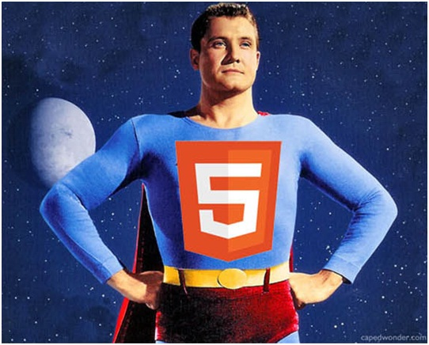
Ok...
WebSocket
But why?
Realtime...
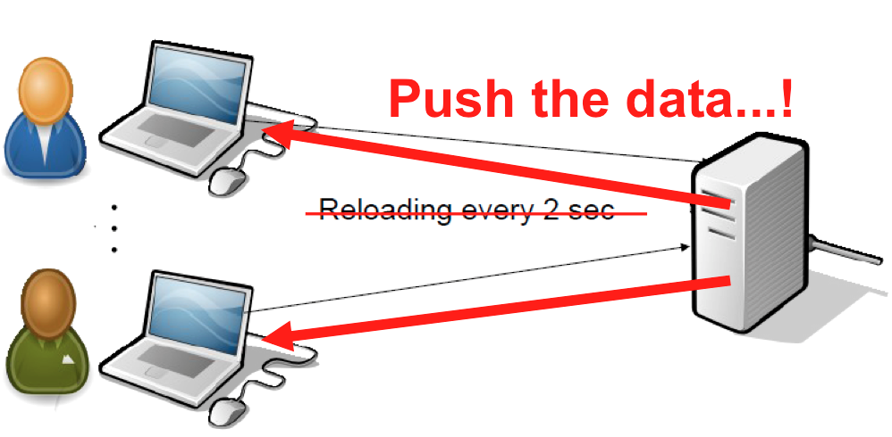
Realtime...
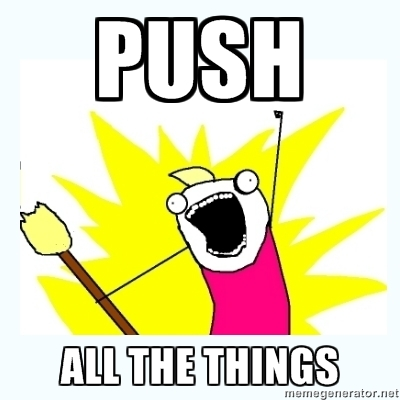
HTTP Limits...
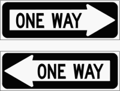
...it's chatty!
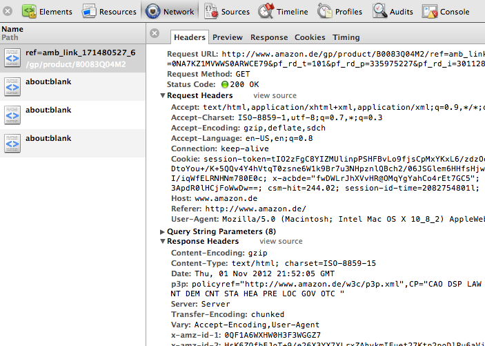
Web Scale??
{kind=link}
ZOMG!
{kind=link}
Agenda
- HTML5 Connectivity and Realtime
- Enter WebSockets
- Current usage
- Outlook: what's next?
WS: History - hixie
- 2009, January
- Version 0, kick off
- 2010, May
- Version 76
WS: IETF took over
- 2010, August
- Version 1, Binary
- 2011, January
- Version 4, Security
- 2011, September
- Version 14, Versioning
- 2011, December
- RFC 6455 => FINAL
Supported by...
- Browsers
- almost all! Yes... IE, but in version 10...
- Servers
- a gazillion servers
- standalone(?) libraries
- Autobahn, SRWebSocket, JavaEE(!) etc...
- Extensions and Protocols
- e.g. STOMP, MQTT, SimplePush (designed for Firefox OS)
Handshake Request
``` GET /chat HTTP/1.1 Host: server.example.com Upgrade: websocket Connection: Upgrade Sec-WebSocket-Key: dGhlIHNhbXBsZSBub25jZQ== Origin: http://example.com Sec-WebSocket-Protocol: chat, superchat Sec-WebSocket-Version: 13 ```Handshake Response
``` HTTP/1.1 101 Switching Protocols Upgrade: websocket Connection: Upgrade Sec-WebSocket-Accept: s3pPLMBiTxaQ9kYGzzhZRbK+xOo= Sec-WebSocket-Protocol: superchat ```JavaScript API
``` // Create new WebSocket var mySocket = new WebSocket("ws://echo.websockets.org"); // Attach listeners mySocket.onmessage = function(evt) { doSomethingFancy(evt.data); }; mySocket.onopen = function(evt) {...}; mySocket.onclose = function(evt) {...}; mySocket.onerror = function(evt) {...}; ```JavaScript API
``` function sendTextMessage() { if (mySocket.readyState !== WebSocket.OPEN) return; mySocket.send("Hello there...!"); } function sendBinaryMessage() { if (mySocket.readyState !== WebSocket.OPEN) return; mySocket.send(canvasElementRef.toBlob()); // blob: default... } // Close WebSocket mySocket.close(); ```ARE YOU READY TO CONNECT TO
WEBSOCKETS ????
JSR 356
- Java API for WebSocket
- Client API
- Server API
Agenda
- HTML5 Connectivity and Realtime
- Enter WebSockets
- Issues / Gotchas
- Current usage
- Outlook: what's next?
WebSocket Issues
- Browsers
- different protocol/API versions..
- old browsers...
- Servers
- different protocol/API versions..
- old handshake VS new handshake
WebSocket Issues
- Writing to a closed WebSocket:
- e.g. race condition...
open?
``` function sendTextMessage() { if (mySocket.readyState !== WebSocket.OPEN) return; mySocket.send("Hello there...!"); } ``` The readySate: ``` WebSocket.CONNECTING WebSocket.OPEN WebSocket.CLOSING WebSocket.CLOSED ```WebSocket Issues
- Browsers..WAT CAN GO WRONG ???
- recent (FF/Chrome): for ws:// from TLS (https://)....
- older Firefox: ESC... true for XHR (and Comet) as well.....
(WebSocket) Issues
- Sending invalid UTF-8
- emoji / emoticons
(WebSocket) Issues
encodeURIComponent()
WebSockets
on
mobile ???
(WebSocket) Issues
- Browser
- Sleep closes the connection
- Native
- it depends....
WebSocket (Browser) Issues
``` mySocket.onclose = function(evt) { // something happend: if (!evt.wasClean) { // add hooks... } }; ``` Apache Cordova...Future =>
Page Visibility API (W3C) ``` document.addEventListener("visibilitychange", function(event) { // Page visible ? if (document.hidden) { } // query the 'visibilityState': var myVisibility = document.visibilityState; ... }, false); ``` * hidden * visible * preview
3G ?
Browser...
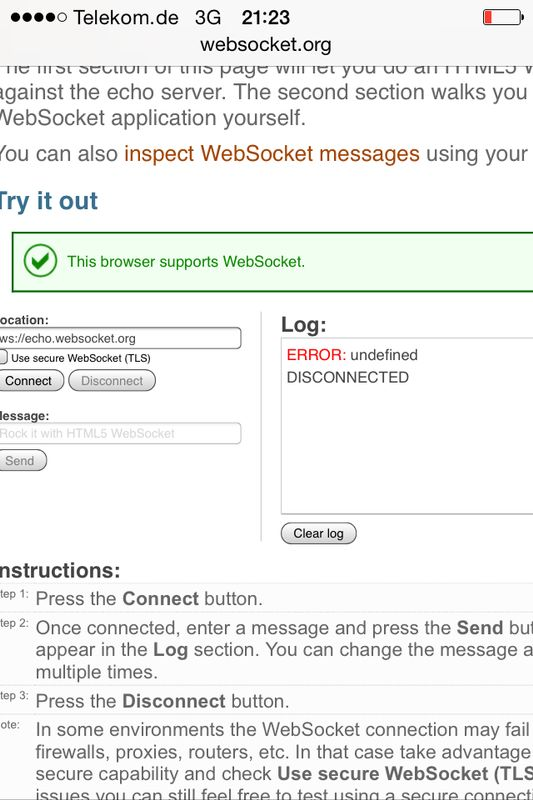...native
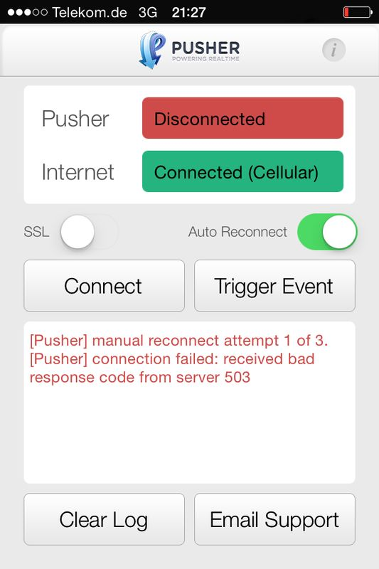Oh, look!
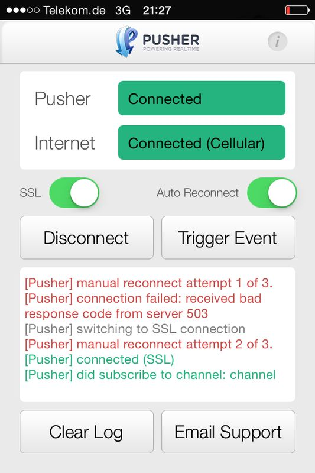
WebSocket secure
``` var ws = new WebSocket("wss://myserver.com/endpoint"); ```
Always!
Doesn't http:// just look odd ? :-)
Actually...
- Telekom fixed it :)
- BUT! Do you know if others support it ?
Android/iOS
- Costs of maintaining (WebSocket) connection (per app)
- sporadic connection scenario
- network events
- battery
- redelivery of messages
- user kills the app
- reboot of device
Ideal case
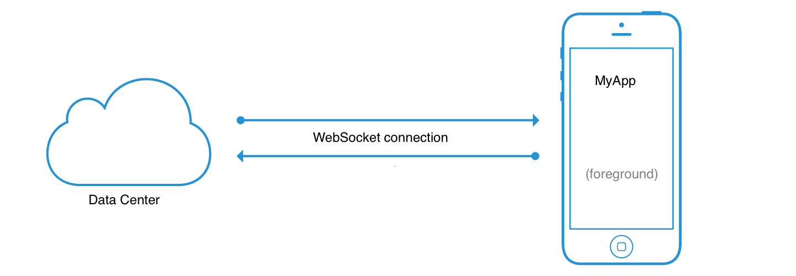
Background*
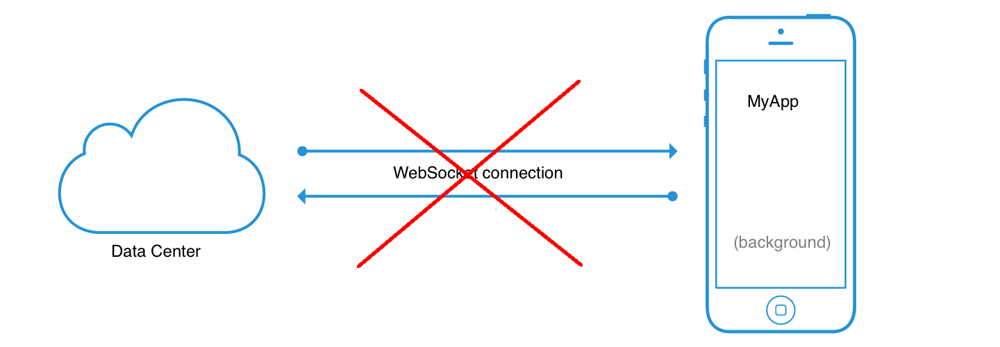
Push for wake up!
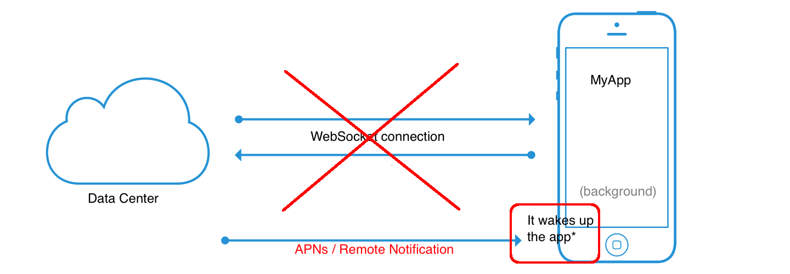
Back to 'normal'
Enterprise Proxies
- blocks (high) ports...
- allows: 80, 443, 843
(WebSocket) Issues
- (Personal) Firewalls
- Virus Scanners
there is some really old software out there...
How to improve?!
WebSocket secure
``` var ws = new WebSocket("wss://myserver.com/endpoint"); ```
Fallbacks!
Really !?!?!?
Engine.io / Socket.io
- Engine.io transport for Socket.io
- They upgrade to WebSocket, if possible...
Engine.io / Socket.io
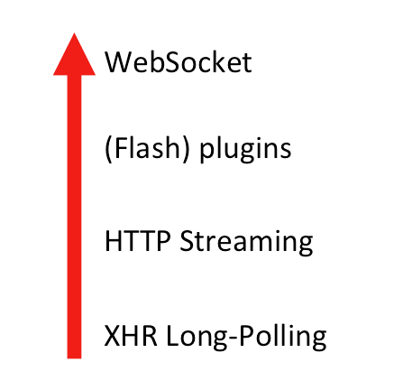Use multiple ports, if possible(80, 443, 843)
ENTERPRISE.JS
- A good API should hide the technical facts
- Devs should code against one API
...like Socket.io does!
Agenda
- HTML5 Connectivity and Realtime
- Enter WebSockets
- Current usage
- Outlook: what's next?
WebSocket usage
- APIs over WebSocket
- Protocols over WebSocket
- APIs integration with WebSocket
- Mobile
SimplePush
- push websocket to Firefox and other devices
WebSocket usage
- When you build Desktop applications (client server solutions) do you develop your application using raw TCP sockets?
- Or, are you using higher level protocols and APIs, such as XMPP, JMS, JDBC?
CDI meets WebSocket
APIs / Protocols over WebSocket
Stomp / HornetQ (Demo)
Agenda
- HTML5 Connectivity and Realtime
- Enter WebSockets
- Current usage
- Outlook: what's next?
Moving on
- Subprotocols (IANA)
- Extensions
- WebSocket over SPDY
HTTP 2.0
THANK YOU
matzew @ redhat . com
- https://github.com/matzew/websockets